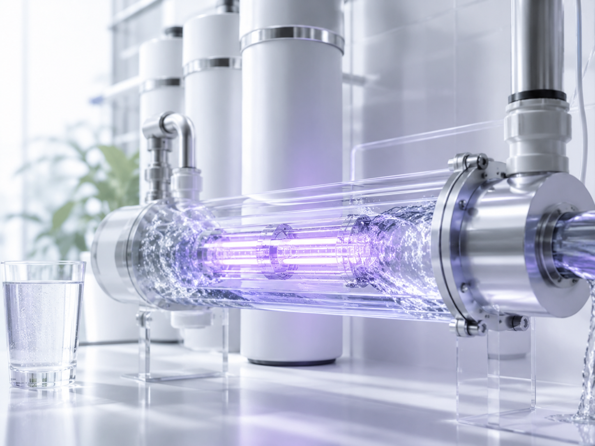
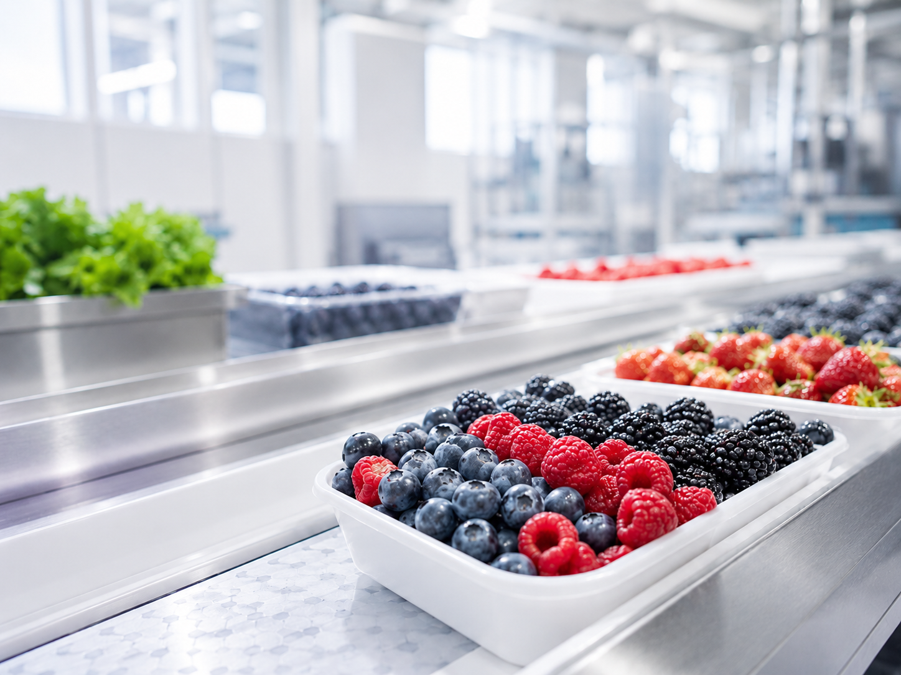
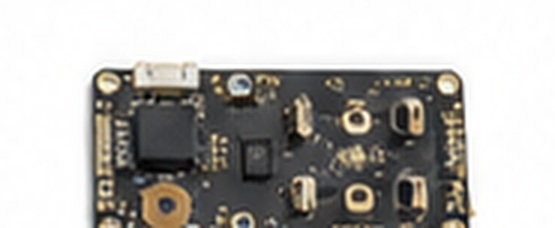
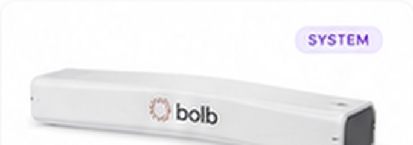
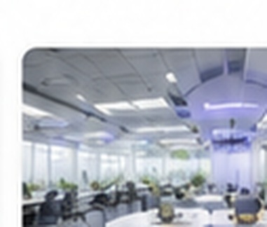

High-performance UV-C LEDs for cleaner air, water, and surfaces.
Bolb develops high-output UV-C LEDs, arrays, reference designs, and intelligent controls that help equipment manufacturers build compact, mercury-free disinfection systems.

UV-C designed around the environment it serves.
Airflow, water absorption, surface geometry, and production speed create different engineering problems. Explore each application as a complete story—from operating challenge to source selection and system validation.
 01
01
Deliver dose inside the airflow.
Explore in-duct, recirculating, and compact air-treatment architectures built around velocity, residence time, and uniform irradiance.
Open the air story →
02Shape light around every pass.
See how flow rate, UV transmittance, optical path length, and reactor geometry influence a compact flow-through design.
Open the water story →Put irradiance where contact happens.
Plan targeted treatment for high-touch areas, equipment interiors, and controlled process zones with attention to shadows and safety.
Open the surface story →
04Add a non-chemical process step.
Explore UV-C integration in processing, packaging, storage, and shelf-life programs where exposure time and product handling are linked.
Open the food-safety story →From one emitter to an integrated solution.
Each product family now has a dedicated page with its role in the system, candidate formats, draft parameters, application fit, and integration considerations.

UV-C LEDs
Discrete high-output emitters for product teams that need control over package placement, optics, electrical drive, and thermal design.
Explore UV-C LEDs →
UV-C arrays
Multi-emitter boards and geometries that make it easier to scale output and create application-specific irradiation patterns.
Explore UV-C arrays →
Reference designs
Draft architectures, design guidance, and integration concepts that help move a UV-C project from requirement to prototype.
Explore reference designs →
Guardian Vision
A selected-product offering for applications that need presence awareness, operating logic, and coordinated UV-C cycle control.
Explore Guardian Vision →Innovation with purpose.
Bolb combines deep semiconductor expertise with practical system engineering to help customers apply UV-C light effectively, safely, and efficiently.
Talk with the Bolb team →Deep expertise
III-nitride semiconductors, UV-C packaging, optical design, and application engineering.
Application focus
Product formats and technical support organized around real system constraints.
Solid-state platform
Compact, mercury-free UV-C technology for modern equipment architectures.
Latest from the Bolb blog.
The science behind UV-C disinfection
How photon dose, wavelength, and exposure conditions shape microbial inactivation.
Read the application story →
UV-C LEDs in HVAC: cleaner air at scale
How compact arrays can fit into recirculating-air and in-duct architectures.
Read the air story →
Designing for water safety with UV-C
Flow, absorption, reactor geometry, and dose are considered as one system.
Read the water story →Match the UV-C source to the application—not the other way around.
Share your target organism, geometry, flow or line speed, and operating constraints with Bolb’s application team.